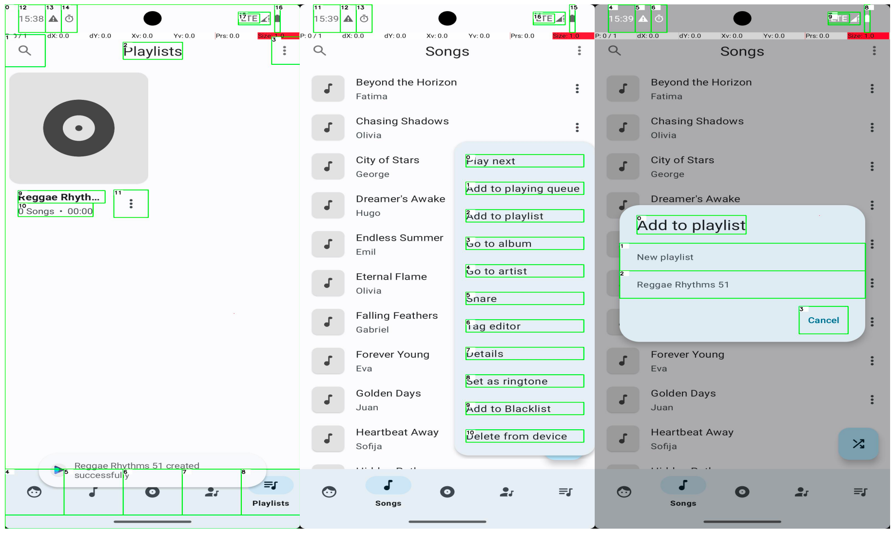
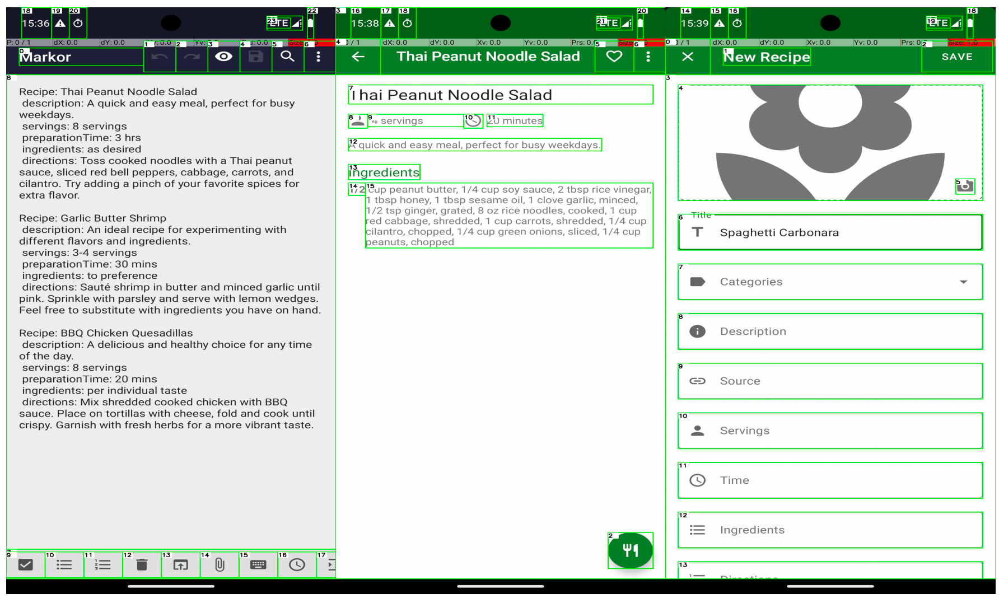
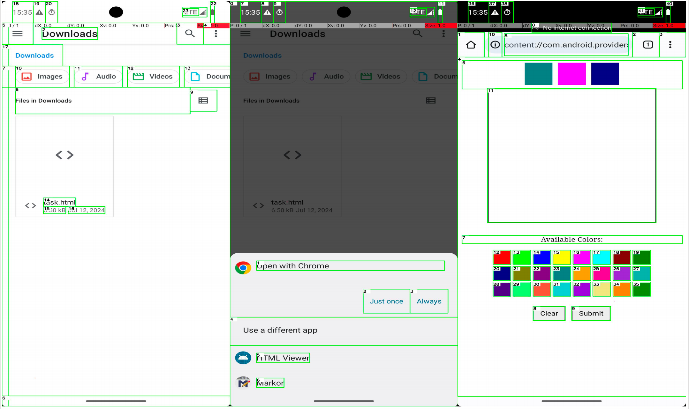

_00.png)
Audio Recorder
The targeted task to be executed is "Record an audio clip using Audio Recorder app and save it". The actual execution steps can be summarized as follows:
- Step1: Click SearchBar
- Step2: Type SearchBar "Audio Recorder"
- Step3: Click "Audio Recorder"
- Step4: Click "Start Recording"
- Step5: Click "End Recording"
- Step6: Save the file
As the following figure shows, we end up on the screenshot with a recorded audio. We recorded a 12s audio recording, effectively completing the target task.

Phone Contact
The targeted task to be executed is "Create a new contact for Hugo Pereira. Their number is +13920741751". The actual execution steps can be summarized as follows:
- Step1: Click "Phone" App
- Step2: Click "Contacts"
- Step3: Click “Add” button
- Step4: Type contact information
- Step5: Save the contact
As figure shows, we end up on the screenshot with a contact named Hugo Pereira. We add a contact with his name and phone number, effectively completing the target task.

Delete File
The targeted task to be executed is "Delete the file banana.mp3 from the Android filesystem located in the Notifications folder within the sdkgphone storage area". The actual execution steps can be summarized as follows:
- Step1: Open "Files" App
- Step2: Click "Show roots"
- Step3: Click "sdkgphone"
- Step4: Click "Notifications"
- Step5: Scroll Down
- Step6: Long Press "banana.mp3"
- Step7: Click "Delete"
- Step8: Click "OK"
As the following figure shows, we end up on the screenshot in the Notifications folder. We delete the file banana.mp3, effectively completing the target task.

Marking Map
The targeted task is "Add a favorite location marker for 47.1303814, 9.5930117 in the OsmAnd maps app". The actual execution steps can be summarized as follows:
- Step1: Open app "OsmAnd" App
- Step2: Click the "Search" button
- Step3: Type "47.1303814, 9.5930117"
- Step4: Click "Show on map"
- Step5: Long Press
- Step6: Click the "Add" button
- Step7: Click the "Add Favorite" button
- Step8: Click the "Save" button
As the following figure shows, we end up on the OsmAnd maps app with a location marker. We add a favorite location marker, effectively completing the target task.

Create Music Playlist
The targeted task to be executed is "Create a playlist in Retro Music titled 'Hip Hop Bangers 270' with the following songs, in order: Golden Days". The actual execution steps can be summarized as follows:
- Step1: Open app "Retro Music" App
- Step2: Click "Playlist"
- Step3: Click "More Options"
- Step4: Click "New Playlist"
- Step5: Type "Hip Hop Bangers 270"
- Step6: Click "Create"
- Step7: Click "Songs"
- Step8: Long Press "Golden Days"
- Step9: Click "Add to playlist"
- Step10: Click "Hip Hop Bangers 270"
As the following figure shows, we end up on the "Retro Music" playlist. We add "Golden Days" into the playlist, effectively completing the target task.

Turn Bluetooth Off
The targeted task to be executed is "Turn Bluetooth off". The actual execution steps can be summarized as follows:
- Step1: Open "Settings" App
- Step2: Click "Connected devices"
- Step3: Click "Connection preferences"
- Step4: Click "Bluetooth"
- Step5: Click "Bluetooth switch"
As the following figure shows, we end up on the screenshot with the Bluetooth. We turn Bluetooth off, effectively completing the target task.

Play Music Playlist
The targeted task to be executed is "Search for the artist Eric Clapton, enter his artist page, and play his playlist". The actual execution steps can be summarized as follows:
- Step1: Open "Spotify" App
- Step2: Click "Search"
- Step3: Click SearchBar
- Step4: Type "Eric Clapton"
- Step5: Click "Play"
As the following figure shows, we end up on the screenshot with the playlist. We play the Eric Clapton's playlist, effectively completing the target task.

Join a community
The targeted task to be executed is "Enter a community page and ask to join". The actual execution steps can be summarized as follows:
- Step1: Open "Twitter" App
- Step2: Click "communities"
- Step3: Click a community
- Step4: Click "Join"
- Step5: Click "Agree and join"
As the following figure shows, we end up on the screenshot with a community. We join the large language model community, effectively completing the target task.

Math Counting Error
The targeted task to be executed is "Create a playlist in Retro Music titled 'Reggae Rhythms 51' with a duration between 45 and 50 minutes using the provided songs". The actual execution steps can be summarized as follows:
- Step1: Open app "Retro Music" App
- Step2: Click "Playlist"
- Step3: Click "More Options"
- Step4: Click "New Playlist"
- Step5: Type "Reggae Rhythms 51"
- Step6: Click "Create"
- Step7: Click "Songs"
- Step8: Long Press "Golden Days"
- Step9: Click "Add to playlist"
- Step10: Click "Reggae Rhythms 51"
- Step11: Long Press "Beyond the Horizon"
- Step12: Click "Add to playlist"
- Step13: Click "Reggae Rhythms 51"
- Step14: Long Press "Chasing Shadows"
- Step15: . . .
As the following figure shows, since the model has no way to calculate the duration of the song added, it will consider that the task has not been completed, and continue to add songs, resulting in task failure.
Memorization Error
The targeted task to be executed is "Add the recipes from recipes.txt in Markor to the Broccoli recipe app". The actual execution steps can be summarized as follows:
- Step1: Open "Markor" App
- Step2: Click "recipes.txt"
- Step3: Quote the content
- Step4: Navigate Home
- Step5: Open "Broccolirecipe" App
- Step6: Click "Add"
- Step7: Type Title content
- Step8: Type Description content
- Step9: Type Serving content
- Step10: Type Time content
- Step11: Type Ingredients content
- Step12: Type "Save"
- Step13: Click "Add"
- Step14: Type Title content
- Step15: Fail
As the following figure shows, we end up on the screenshot with a Pages that have not been filled out. This is because the number of steps of the task exceeds the maximum number of steps that the model can carry.
Vision Error
The targeted task to be executed is "Open the file task.html in Downloads in the file manager; when prompted open it with Chrome. Then create a drawing using the three colors shown at the top and hit submit". The actual execution steps can be summarized as follows:
- Step1: Open "Files" App
- Step2: Click "task.html"
- Step3: Click "Open with Chrome"
- Step4: Click "Colors"
- Step5: Fail
As the following figure shows, we end up on the screenshot with an empty drawing. This is because the model has no visual information, resulting in the failure to obtain specific color information and the failure to perform the task of selecting colors.
